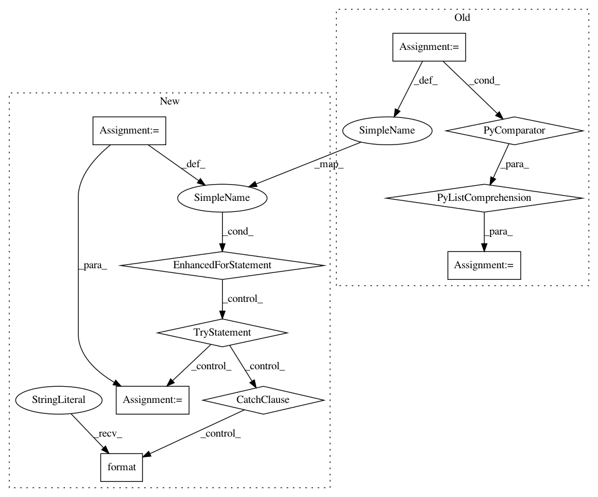

44672d4eba334ca97d32874d9aa03b02ce46d513,nilmtk/metergroup.py,MeterGroup,load,#MeterGroup#,517
Before Change
.. note:: Different AC types will be treated separately.
// Get a list of generators
generators = [meter.load(**kwargs) for meter in self.meters]
// Load each generator and yield the sum
while True:
chunk = None
After Change
// Get a list of generators
generators = []
for meter in self.meters:
try:
generator = meter.load(**kwargs)
except MeasurementError as e:
warn("Ignoring meter "{}" because it does not have the correct"
" measurements. The MeasurementError was: "{}""
.format(meter.identifier, e))
else:
generators.append(generator)
// Load each generator and yield the sum
while True:
chunk = None
for generator in generators:
try:
In pattern: SUPERPATTERN
Frequency: 3
Non-data size: 10
Instances
Project Name: nilmtk/nilmtk
Commit Name: 44672d4eba334ca97d32874d9aa03b02ce46d513
Time: 2014-12-10
Author: jack-list@xlk.org.uk
File Name: nilmtk/metergroup.py
Class Name: MeterGroup
Method Name: load
Project Name: ray-project/ray
Commit Name: 2cf4c7253ce1fd01975fcf970e52434e44f6d71f
Time: 2021-03-04
Author: ekhliang@gmail.com
File Name: python/ray/util/client/worker.py
Class Name: Worker
Method Name: get
Project Name: pyprob/pyprob
Commit Name: a0f0369df8c3a8dc9b9a0687f1b73a7fd9aa5ab3
Time: 2018-12-04
Author: atilimgunes.baydin@gmail.com
File Name: pyprob/nn/dataset.py
Class Name: DatasetOffline
Method Name: __init__